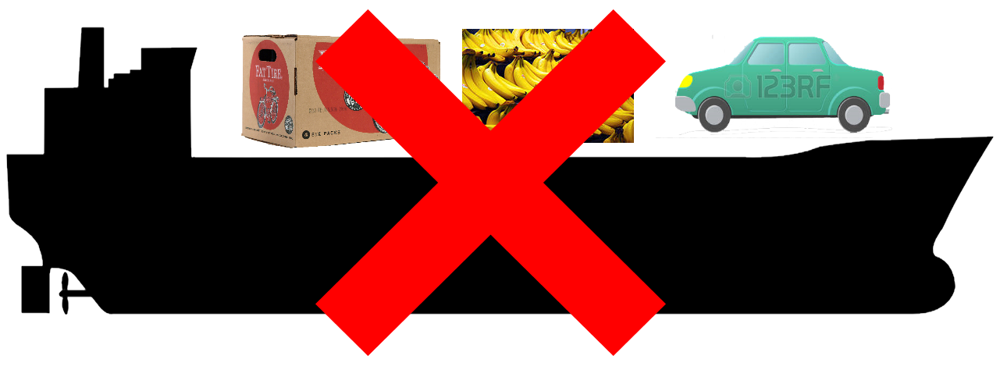
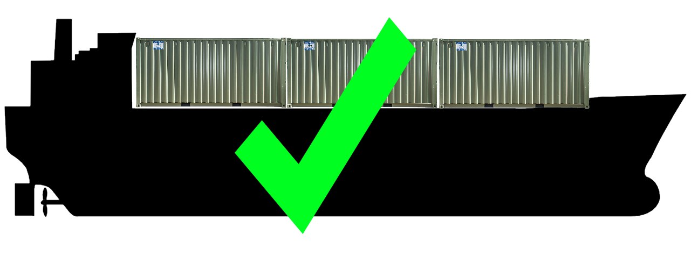
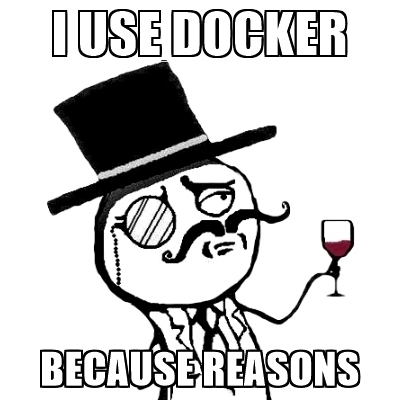

Introduction to Docker
Live Deck: https://deck.nullocated.com
Deck Source: https://github.com/cchamplin/wwc-docker-deck
Software Engineer | Hobbyist | Devops | Climber | Traveler
Who is this person?
Caleb Champlin
 caleb.champlin@gmail.com
caleb.champlin@gmail.com github.com/cchamplin
github.com/cchamplin
- The type of person that has 500+ tabs open in Chrome
Beer Lover | Educator | Contributor | Outdoor Enthusiast
Docker
- 1M+ Dockerized Applications
- Over 12 billion containers pulled
- Large community and support
- Lot's of meetups
Is docker for me?
- Software is hard
- Intrastructure is hard
- Environment management is hard
- Life is hard
- Docker can help?!
Situations where docker can help?
- Software needs to be available for lots of environment
- Software needs to be available for lots of configurations
- Software Pipelining
- Developer onboarding

Container Basics
Containers are like boxes! We put things into them.
Container Basics
Containers

VMs

Container Basics
What does that really mean for me?
Container Basics


Is docker for me?

Demo
Ubuntu/Debian
$ sudo su
$ curl -fsSL https://download.docker.com/linux/ubuntu/gpg | apt-key add -
$ add-apt-repository "deb [arch=amd64] https://download.docker.com/linux/ubuntu $(lsb_release -cs) stable"
$ apt install docker-ce
Centos/Redhat
$ sudo su
$ yum-config-manager --add-repo https://download.docker.com/linux/centos/docker-ce.repo
$ yum install docker-ce
Demo
Testing our Installation
$ docker --version
$ docker info
$ docker run -it centos /bin/bash
$ $ cat /etc/os-release
$ $ ps
$ $ whoami
$ $ ls
$ $ rm -rf /var /lib /lib64 /bin
Docker Terminology
- Docker Client
- Docker Engine/Server

Images vs. Containers
- Images have every thing a container needs to run (files,users,information about processes)
- Containers are a running instance of an image

Demo
Building our first image
$ vim Dockerfile
FROM centos
RUN yum install -y python perl
COPY my-script.py /var/scripts
COPY my-script.conf /etc/
RUN chmod +x /var/scripts/my-script.py
ENTRYPOINT ["/var/scripts/my-script.py"]
Demo
Building our first image
$ docker build ./
$ docker images
$ docker build ./ -t my_first_image
$ docker run -d --name my_first_container my_first_image
$ docker ps
Demo
Building our second image
$ vim Dockerfile
FROM my_first_image
EXPOSE 80
Demo
Building our second image
$ docker build ./ -t my_second_image
$ docker run -d -p 8080:8080 --name my_second_container my_second_image
$ docker ps
Demo
Interacting with images
$ docker exec -it my_second_container /bin/bash
$ ps